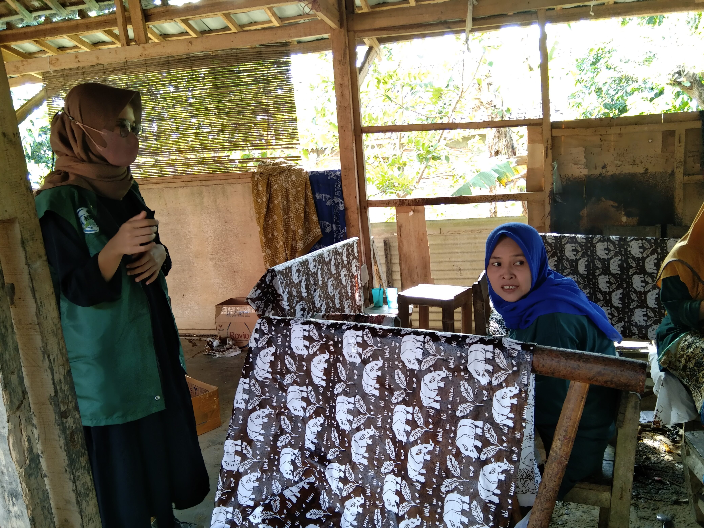

Profile Wisata Batik Cikadu Tanjung Lesung
History of Batik Cikadu Tanjung Lesung
Batik Cikadu dimulai sejak 21 April 2015 oleh ibu Hj Umi selaku pembina. Batik Cikadu digagas mengingat belum tersedianya souvenir berupa batik dari Pandeglang. Adalah ibu Elis sebagai ketua organisasi Keluarga Batik Cikadu, dan dibantu oleh ibu kepala Desa Eli Suhayah dan ibu Umi sebagai Pembina di organisasi Keluarga Batik Cikadu. Orang – orang tersebutlah yang membantu masyarakat lokal untuk terjun langsung kedalam industri Batik Cikadu.
Batik Cikadu telah menyita perhatian berbagai pihak khususnya di Pandeglang. Batik Cikadu telah ditetapkan sebagai batik khas Pandegelang pada saat ini disusul dengan penurunan SK Bupati pada September 2016 disebutkan bahwa seluruh Pegawai Negeri Sipil di Pandegelang wajib memakai batik Cikadu setiap hari Jumat.
50 motif batik tersedia untuk digoreskan diatas kain di Batik Cikadu. 2 diantara 50 motif tersebut menjadi primadona yang tidak terlewatkan dari batik ini. motif Badak Bercula Satu dan motif Lesung. Badak Bercula Satu merupakan fauna langka di dunia yang hanya dapat ditemukan di Banten, sementara lesung adalah alat menumbuk padi yang menjadi kesenian Banten hingga saat ini.
Batik Cikadu telah didistribusikan tidak hanya disekitar Pandeglang saja melainkan seluruh Indonesia melalui penjualan Online. Batik Cikadu tidak hanya memproduksi kain batik untuk dijual, para konsumen dapat ikut berpartisipasi dalam proses pembuatan Batik, Industri Batik Cikadu membuka paket edukasi bagi para konsumen. Hal yang harus dilakukan konsumen adalah datang langsung ke sanggar Batik Cikadu. Disana konsumen akan secara langsung dimentori oleh pecanting lokal desa Tanjung Jaya dan hasilnya dapat langsung dibawa pulang sebagai cinderamata.

Gallery




Testimonials
What people say about Us.
Map Location
All rights tanjungjaya.my.id